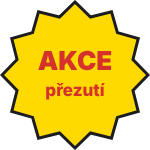
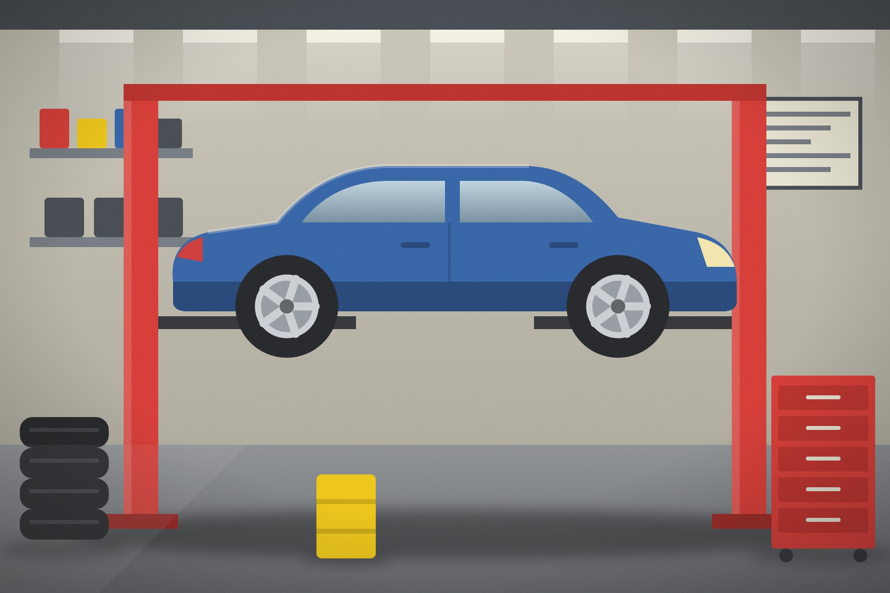
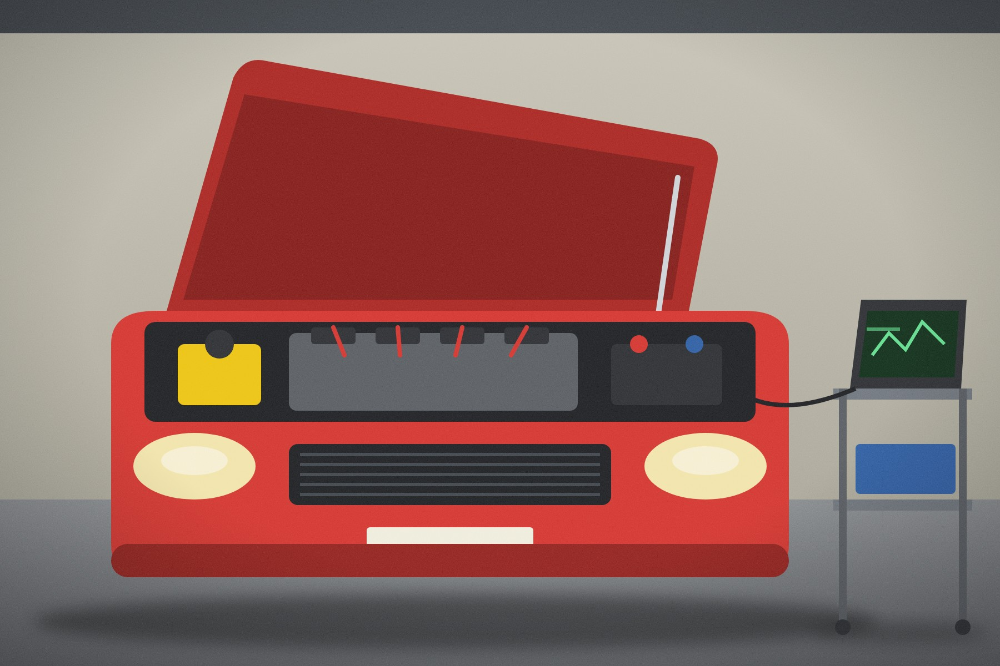
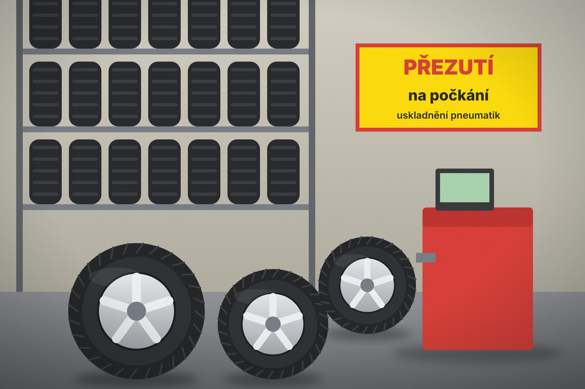

RYCHLÝ KONTAKT
Josef Kopřiva
tel.: 123 456 789
mobil: +420 123 555 010
servis@autoservis-kopriva.example
OTEVÍRACÍ DOBA
Po–Pá: 7:00 – 17:00
So: 8:00 – 12:00 (po dohodě)
Ne: zavřeno
AKCE MĚSÍCE!
Přezutí kompletních kol 600 Kč
Plnění klimatizace 990 Kč
více zde >>
PROČ K NÁM?
» tradice od roku 1994
» opravy všech značek
» záruka 24 měsíců
» férové ceny bez překvapení
» náhradní vozidlo po dohodě
Počet návštěv: 0 0 4 7 1 3 9
NAŠE SLUŽBY

Servisní prohlídky a výměna oleje
Pravidelné prohlídky děláme podle předpisu výrobce vozu a zapíšeme je do servisní knížky. Olej a filtry máme pro běžné vozy skladem, takže výměnu většinou stihneme na počkání do 45 minut. Použitý olej ekologicky zlikvidujeme.
Brzdy, podvozek a geometrie
Měníme brzdové destičky, kotouče, čelisti i brzdovou kapalinu. Opravujeme tlumiče, ramena, čepy, ložiska kol a řízení. Po opravě podvozku seřídíme geometrii na 3D zařízení a dostanete vytištěný protokol.
Diagnostika a autoelektrika

Svítí vám kontrolka motoru, ABS nebo airbagu? Připojíme vůz na diagnostiku, vyčteme paměť závad a řekneme vám, co s tím. Diagnostiku má na starosti Martin Kopřiva. Opravujeme také startéry, alternátory, osvětlení a montujeme tažná zařízení včetně elektroinstalace.
Klimatizace
Plníme klimatizace chladivem R134a i R1234yf. Součástí plnění je kontrola těsnosti a dezinfekce ozonem. Klimatizaci doporučujeme nechat zkontrolovat jednou za dva roky.
Pneuservis

Přezouváme osobní vozy, SUV a dodávky do průměru 20". Kola vyvážíme a na přání vám pneumatiky uskladníme do další sezóny. Nové pneumatiky objednáme do druhého dne. V sezóně (říjen, listopad a duben) se prosím objednejte předem.
Příprava a zajištění STK
Vůz před technickou kontrolou prohlédneme, odstraníme závady a na STK a měření emisí s ním zajedeme za vás. Vy si jen přijdete pro auto s novou známkou.
Rozvody, spojky a výfuky
Měníme rozvodové řemeny a řetězy včetně vodní pumpy, spojkové sady a dvouhmotové setrvačníky. Opravujeme a měníme výfuky, katalyzátory a lambda sondy.
Náhradní vozidlo
Při opravě delší než jeden den vám po dohodě zapůjčíme náhradní vozidlo.

© 2013 Autoservis Kopřiva, Nádražní 214, Lhotka nad Bystřicí, PSČ 123 45, IČ: 12345678, tel. 123 456 789, e-mail: servis@autoservis-kopriva.example
Vytvořeno v systému WebSnadno · Všechna práva vyhrazena · Kopírování textů a fotografií bez souhlasu majitele je zakázáno!